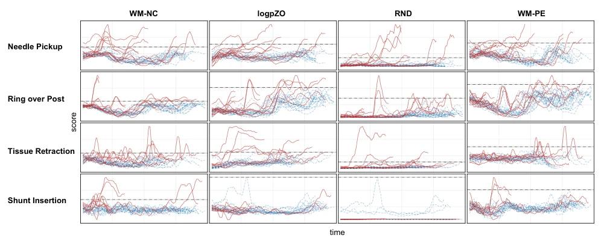
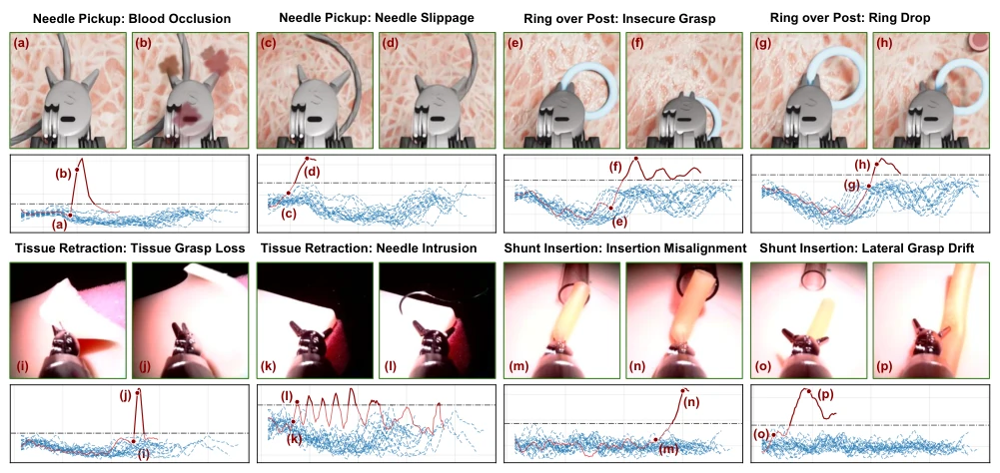
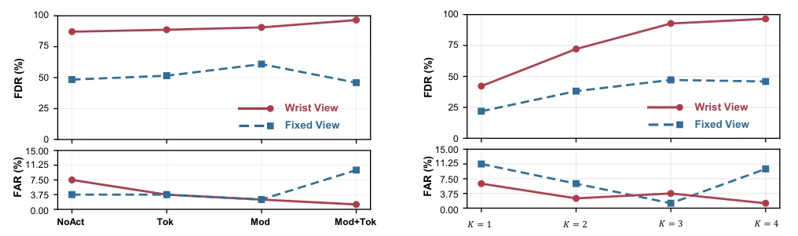
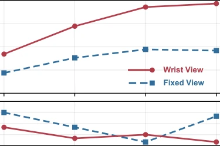

Fig. 1. Overview of the proposed FoMo-FD framework. Multi-view observations are encoded by a frozen DINOv2 backbone and an offline-trained VAE into compact latent tensors. From successful demonstrations, FoMo-FD trains a flow-matching world model conditioned on the intervening action chunk to predict the endpoint latent of a short execution window. At test time, the observed endpoint latent is scored by inverse transport under the learned nominal dynamics, and the resulting window-level nonconformity score is compared with a calibrated threshold to raise failure alarms.
Fig. 2. Representative observations from the four tasks. Each panel shows the fixed-camera view on the left and the wrist-camera view on the right. Top row: simulated needle pickup and ring over post. Bottom row: real- world tissue retraction and shunt insertion.

Fig. 3. Qualitative wrist-view score traces across tasks and detector variants. Rows indicate tasks and columns indicate detectors. Blue dashed curves show the N = 19 successful calibration rollouts, red curves show selected failed rollouts, and gray dash-dot lines show calibrated thresholds. The red failed rollouts are selected by a fixed rule: the first two episodes from each failure mode for the corresponding task. Each panel uses its own score scale.

Fig. 4. Representative failure episodes using the proposed WM-NC wrist-view score. For each example, the score trace is paired with wrist-camera frames corresponding to marked time points on the curve, showing what occurs visually as the failure develops. Horizontal axes indicate rollout time t, and vertical axes indicate rwrist t . Blue dashed curves show successful calibration rollouts, the red curve shows the selected failed rollout, and the gray dash-dot line shows the calibrated threshold.

Fig. 5. Action conditioning modes are denoted as NoAct, Mod, Tok, and Tok+Mod, corresponding to no action conditioning, global action modulation only, action-token cross-attention only, and their combination.

Fig. 6. Endpoint prediction horizon ablation. Top: rollout-level FDR; bottom: rollout-level FAR, aggregated across the four tasks for the fixed and wrist views. Increasing the endpoint prediction horizon K substantially improves wrist-view FDR while maintaining low FAR, motivating the use of K = 4 in the main experiments.